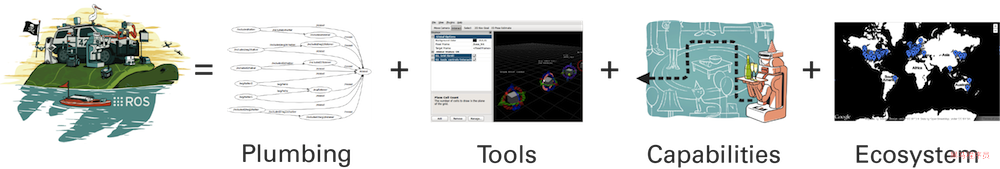

ROS 是什么¶
官方介绍¶
The Robot Operating System (ROS) is a flexible framework for writing robot software. It is a collection of tools, libraries, and conventions that aim to simplify the task of creating complex and robust robot behavior across a wide variety of robotic platforms.
Info
机器人操作系统（ROS）是一种用于编写机器人软件的灵活框架。 它是工具，库和协议的集合，旨在简化各种机器人平台上，去构建复杂而强大的机器人。
ROS 是 Robot Operating System的简写，翻译过来就是机器人操作系统。它是一个软件框架，目的是提供开发平台，工具及生态给开发人员，让开发人员快速的去开发强大的机器人系统。
发展历史¶
斯坦福(2007)¶
Eric Berger和Keenan Wyrobek是在斯坦福大学Kenneth Sailsbury机器人实验室工作的博士生，他们领导的是个人机器人计划。在研究机器人在人类环境中进行操作任务的同时，两位学生注意到他们的许多同事都受到机器人技术多样性的阻碍：优秀的软件开发人员可能没有所需的硬件知识，有人开发最先进的路径规划可能不知道如何进行所需的计算机视觉。为了弥补这种情况，两名学生着手建立一个系统，为学术界的其他人提供一个起点。
两人将PR1构建为硬件原型，并开始使用其中的软件，借用其他早期开源机器人软件框架的最佳实践。在寻求进一步开发资金的同时，Eric Berger和Keenan Wyrobek会见了Willow Garage的创始人Scott Hassan，这是一家技术孵化器，致力于自主SUV和太阳能自动驾驶船。 Hassan分享了Berger和Wyrobek关于“机器人Linux”的愿景，并邀请他们来Willow Garage工作。 Willow Garage于2007年1月启动，并于2007年11月7日向SourceForge提交了第一份ROS代码。
Willow Garage (2007-2013)¶
Willow Garage开始开发PR2机器人作为PR1的后续，而ROS作为运行它的软件。来自二十多家机构的团体为ROS做出了贡献，包括核心软件和越来越多的软件包，这些软件包与ROS一起构成了一个更大的软件生态系统。事实上，Willow以外的人们为ROS做出了贡献（特别是来自斯坦福大学的STAIR项目），这意味着ROS从一开始就是一个多机器人平台。虽然Willow Garage最初还有其他项目正在进行中，但他们被取消了个人机器人计划：专注于生产PR2作为学术界和ROS的研究平台，作为开源机器人堆栈，它将成为学术研究和科技创业公司的基础就像基于网络的初创公司的LAMP堆栈一样。
2008年12月，Willow Garage迎来了他们三个内部里程碑中的第一个：PR2在两天内连续导航，距离为pi公里。不久之后，早期版本的ROS（0.4芒果探戈）被发布，随后是第一篇RVIZ文献和第一篇关于ROS的论文。在初夏，第二个内部里程碑：PR2导航办公室，打开门，并进入。随后在8月份，ROS.org网站启动了。关于ROS的早期教程于12月发布，准备在2010年1月发布ROS 1.0 。这是里程碑3：为Willow Garage的工程师在过去3年中开发的巨大功能提供了大量的文档和教程。
在此之后，Willow Garage实现了其最长的目标之一：向有价值的学术机构赠送10台PR2机器人。这一直是创始人的目标，因为他们认为PR2可以启动世界各地的机器人研究。他们最终向不同的机构颁发了11个PR2，包括弗莱堡大学（德国），博世，佐治亚理工学院，KU Leuven（比利时），麻省理工学院，斯坦福大学，慕尼黑大学（德国），加州大学伯克利分校，U Penn，南加州大学和大学。东京（日本）。这与Willow Garage非常成功的实习计划（由Melonee Wise于2008-2010运行）相结合，有助于在机器人世界中传播关于ROS的信息。第一个正式的ROS发布版本：ROS Box Turtle，于2010年3月2日发布，标志着ROS首次正式发布，带有一套公版使用的版本包。这些发展导致第一架无人机运行ROS ，第一辆运行ROS的自动驾驶汽车，以及ROS对Lego Mindstorms的改编。随着PR2 Beta计划的顺利进行，PR2机器人于2010年9月9日正式发布商业采购。
OSRF and Open Robotics (2013-present)¶
自OSRF接管ROS的初级开发以来，每年都会发布一个新版本，同时对ROS的兴趣不断增长。 ROSCons自2012年以来每年都会发生，与ICRA或IROS共同举办两场旗舰机器人会议。已经在各个国家组织了ROS开发者的聚会，已经出版了许多ROS书籍，并启动了许多教育计划。 2014年9月1日，NASA宣布第一个在太空中运行ROS的机器人：Robotnaut 2，位于国际空间站。 2017年，OSRF更名为Open Robotics。技术巨头亚马逊和微软在此期间开始对ROS感兴趣，微软在2018年9月将核心ROS移植到Windows ，随后亚马逊网络服务公司在11月发布了RoboMaker 。
也许迄今为止OSRF /开放机器人技术最重要的发展（不打算开始支持ROS的机器人平台的爆炸或每个ROS版本的巨大改进）是ROS2的提议，ROS是一个重要的API改变ROS，旨在支持实时编程，更广泛的计算环境，并利用更现代的技术。 ROS2在ROSCon 2014 上宣布，第一次提交到ros2存储库是在2015年2月，随后是2015年8月发布的alpha版本。 ROS2的第一个发行版本Ardent Apalone于2017年12月8日发布，开创了下一代ROS开发的新纪元。
产品布局¶

Plumbing¶
探测发现机制。
- 实现了进程管理。
- 实现了进程间通讯。
- 实现了设备驱动。
Tools¶
提供了开发调试的工具。提升开发效率。
- 模拟器
- 实现了可视化
- 调试工具包
- 日志管理工具包
Capabilites¶
提供了大量的开源库供调用。
- 控制
- 规划
- 感知
- 地图
- 导航
Ecosystem¶
为开发人员提供学习资料和交流平台。
- wiki
- 社区